CLUSTERING.
Clustering with R - The Data
The data used for clustering in this section was gathered from Kaggle. More information can be see in the 'Data Gathering' portion. Too quickly summarize, the data was gathered by the World Bank. And, the exact subset of the data used was the “Country_TemperatureCRU.” This dataset contains the mean monthly and annual temperatures by country for the period 1961-1999. An advantage of using this dataset is that it's already been cleaned and stripped of any N/A values. An image of it can be seen and downloaded below. Note: all the values are in degrees Celsius.
There are 1 label + 13 columns and 178 observations in total.

This is a screenshot of 'country_average'.
Download country_average.csvClustering with R - Numeric Data
The data used for clustering in this section was gathered from Kaggle. More information can be see in the 'Data Gathering' portion. Too quickly summarize, the data was gathered by the World Bank. And, the exact subset of the data used was the “Country_TemperatureCRU.” This dataset contains the mean monthly and annual temperatures by country for the period 1961-1999. An advantage of using this dataset is that it's already been cleaned and stripped of any N/A values. An image of it can be seen and downloaded below. Note: all the values are in degrees Celsius.
Code
The code for all the images and processes can be found below:
CODE: R - Clustering
STEP 1: Libraries
The first step was importing all the necessary libraries for the visualizations needed for clustering.
STEP 2: Removing Label
The second step was removing the labels, which were the ISO 3-letter abbreviations of the countries. This was done by saving the labels. Note: the data was/is clean and doesn't need any more pruning.
STEP 3: Distance Metric Matrices (Dendrogram)
The third step was getting the 3 distance matrices. The distance calculations used in this step are: (1) Euclidean, (2) Manhattan, (3) Cosine Similarities, and (4) a normal cluster. The purpose of this step is to determine a measure of similarity between two non-zero vectors of an inner product space; this same methodology is being implemented over 3 distance calculations to get a wide perspective of results. The results were then visualized via Dendrogram. Dendrogram are useful to determine a hierarchical relationship between objects. Note: Due to the sheer number of countries the scaling of the image can't be seen on the website, but when running it on RStudio the results can be seen clearer.
Note: Due to the sheer number of countries the scaling of the image can't be seen on the website, but when running it on RStudio the results can be seen clearer.

This is a screenshot of the Eucledian Distance Dendrogram.

This is a screenshot of the Eucledian Distance Dendrogram.
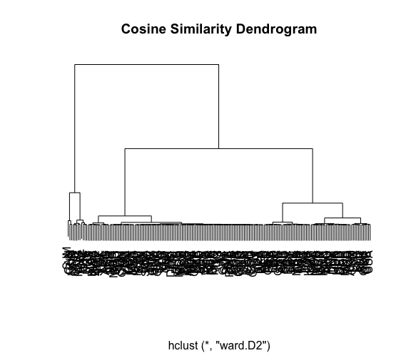This is a screenshot of the Cosine Similarity Dendrogram.

This is a screenshot of the Cluster Dendrogram.
STEP 4: K-Means / Elbow Chart
The next step in the clustering process is implementing K-means clustering. K-means clustering is a method of grouping with an aim to partition n observations into k clusters with the nearest mean. To determine the ‘k’ value, we deploy an elbow graph. The elbow graph showcases the k values along with a heuristic used to determine the number of clusters in the data. It is often said that the steeper the ‘k’ value is, the more apt it is to use in the K-Means clustering.
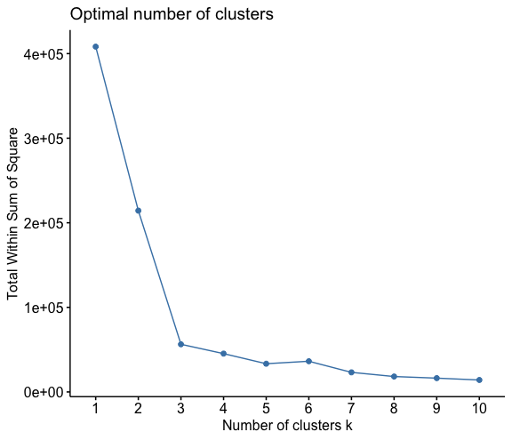
This is a screenshot of the Elbow Graph.
In the elbow chart above, we can see that K=2,5,8 are the best K-values to use for Means clustering.
STEP 5: K-Means Clustering
We can see below the K-Means clustering for various K groups. The graph is also accompanied by a ‘fviz_cluster’, which is a more elegant way to depict K-Means clustering.

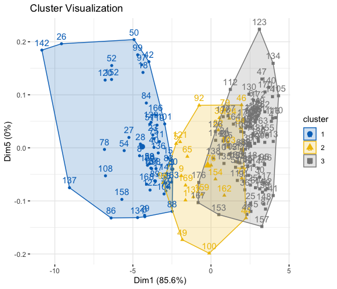
This is a screenshot of KMeans Clustering where K = 3


This is a screenshot of KMeans Clustering where K = 2


This is a screenshot of KMeans Clustering where K = 5
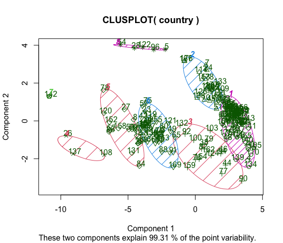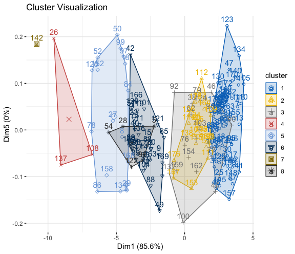
This is a screenshot of KMeans Clustering where K = 8
STEP 6: Clustered Dendrogram
The next step in the clustering process is implementing K-means clustering. K-means clustering is a method of grouping with an aim to partition n observations into k clusters with the nearest mean. To determine the ‘k’ value, we deploy an elbow graph. The elbow graph showcases the k values along with a heuristic used to determine the number of clusters in the data. It is often said that the steeper the ‘k’ value is, the more apt it is to use in the K-Means clustering.

This is a screenshot of the Clustered Dendrogram where K = 3
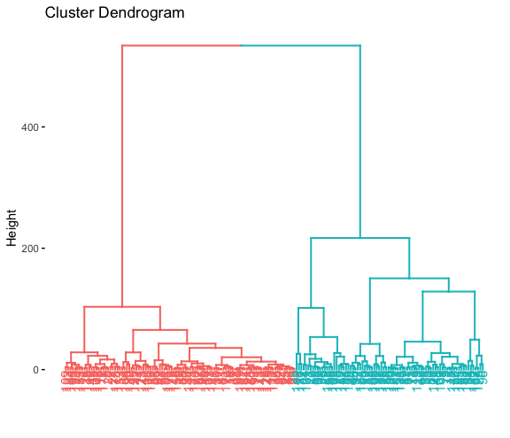This is a screenshot of the Clustered Dendrogram where K = 2

This is a screenshot of the Clustered Dendrogram where K = 5
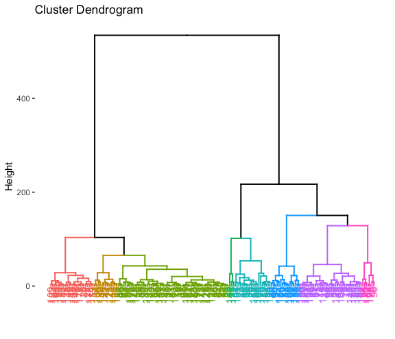This is a screenshot of the Clustered Dendrogram where K = 8
STEP 7: Hierarchical Clustering
In the next step, we can identify the Hierarchical clusters. This is a process where groups of similar objects are bound together as clusters. Each cluster is a distinct to each other and the objects within the same cluster are similar to each other. Ultimately, we’re seeing the same results are the Dendrogram. We can now group the k values we determined with the Hierarchical cluster via boxes.
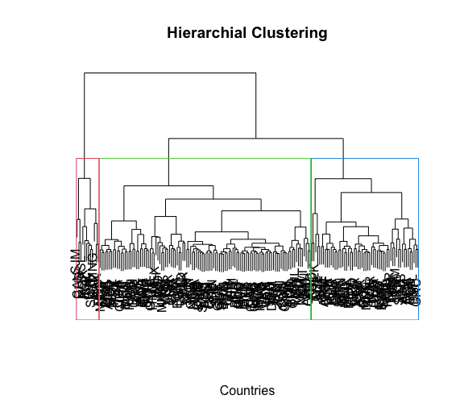
This is a screenshot of the Hierarchical Cluster where K = 3

This is a screenshot of the Hierarchical Cluster where K = 2
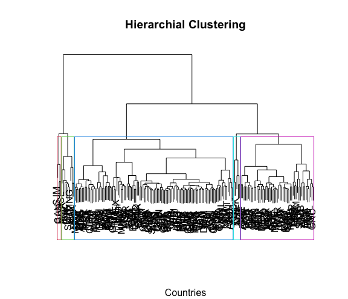This is a screenshot of the Hierarchical Cluster where K = 5
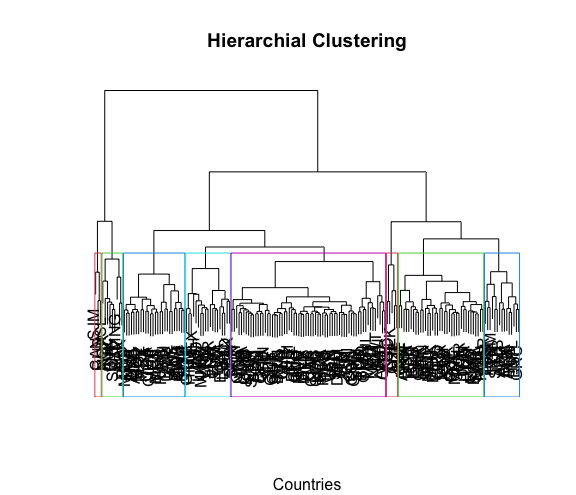This is a screenshot of the Hierarchical Cluster where K = 8
R - SUMMARY
All in all, these graphs were to showcase how countries would be categorized together based on their the mean monthly and annual temperatures by country for the period 1961-1999. The crux of the results were that, the countries can be grouped in either 2, 3, 5, or 8 clusters which would all make viable sense for a user to understand and correlate between. This was proven by performing K-Means clustering and determining the optimal K value via the elbow plot. Then, using the optimal k-values, Hierarchical Cluster and Dendrograms were generated showcasing the arial cluster amongst all countries.
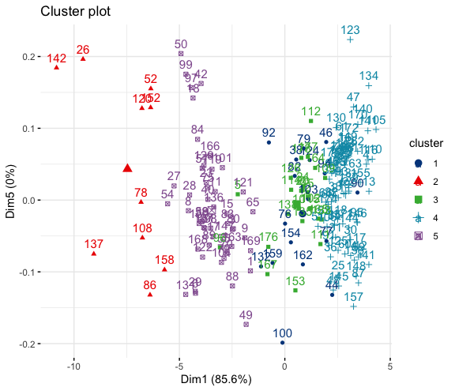
Cluster Plot of the data where K = 5
BONUS: 3 New Vectors
For this section, the question proposed was: by entering 3 vectors, would it be possible to tell what category/group they were in based on K-Means clustering. First, three ‘outlier’ vectors were added to the original country. The purpose of adding outlier vectors is to determine if both the clusters are working and noticing where the clusters are. If we can determine this case, we can ultimately generalize it by putting random values. In essence, we’re testing to see if the vectors we put would get categorized together and if they do, we can put three vectors “within” the dataset and be safely assured that they’ll be clustered properly.
The process was fairly simple. First, we add the three outlier vectors and repeat the whole code again. The code for this can be found above at the beginning of the 'Cluster' Tab.
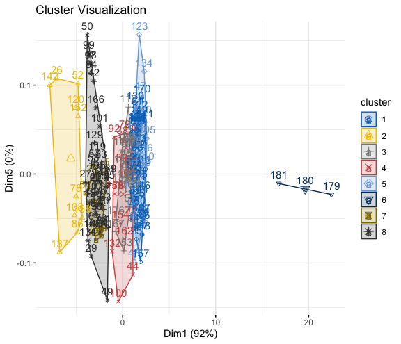
This is a screenshot of the K-Means Clustering where K = 5
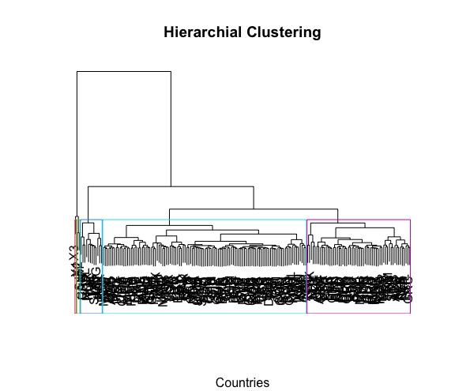This is a screenshot of the Hierarchical Clustering where K = 5
Analysis:
As we can determine that the three outlier vectors induced in the dataset (X1, X2, X3) can be clearly depicted in both the K-Means and Hierarchical clustering with k = 5. This makes sense, as the three vectors introduced in the dataset were all outliers and were forced to be in a group together. This result can be generalized to any amount of new vectors, were our algorithm will shift automatically and cluster them regardless or not if they're part of the dataset. All in all, this example was purposefully done so that anyone can see that the three added vectors are indeed being clustered.
Clustering with Python - The Data
The data taken for text clustering was the result of the data cleaning done in the ‘Data Cleaning’ portion. To quickly overview, the raw data collected for Python data cleaning showcases various unfiltered Tweets, Tweet ID, and sentiment. There are approximately over 40,000 tweets.
Code
The code for all the images and processes can be found below in Python:
CODE: Python - Clustering
WordCloud
The data taken for text clustering was the result of the data cleaning done in the ‘Data Cleaning’ portion. To quickly overview, the raw data collected for Python data cleaning showcases various unfiltered Tweets, Tweet ID, and sentiment. There are approximately over 40,000 tweets.
The text data was cleaned by first importing all the important libraries, such as numpy, pandas, nltk, etc. Next, the raw data is parsed through the tweet data and remove any unnecessary symbols (such as commas and '@') and strip it of any white space. Upon completion, using NLKT, the tweets are then abstracted by removing stop words such as and, like, etc. This gives a better representation of what the tweets are. Then, we continued to clean it and using PunktSentenceTokenizer, the tweets are broken down into sentences using a previously built in tool using the library NLKT. We then pass the tweets through the Tokenizer to get bite-sized sentences which can be parsed through. The cleaned data can be seen below for all 40,000+ tweets.
For this portion, only the first ~200 rows were taken out of 40,000+ rows. The original dataset can be downloaded and viewed below as 'twittercleaned_sample.csv'.
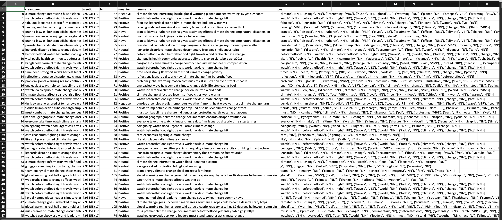
Downloadtwittercleaned_sample.csv
Based on the data, were 4 word clouds were generated by the type of twitter sentiment: negative, positive, neutral, news.
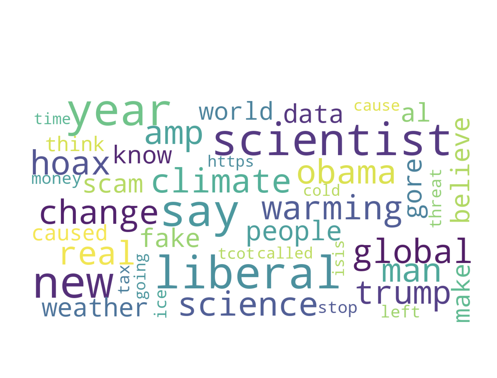
Figure: Negative Sentiment Word Cloud

Figure: Positive Sentiment Word Cloud

Figure: Neutral Sentiment Word Cloud

Figure: News Sentiment Word Cloud
CountVectorize
The next step of the process is generating the countvectorizer dataset. This is done by creating using countvectorizer in python and removing the label. The columns represents the unique set of words and the rows represent the document id. Download the dataset below.
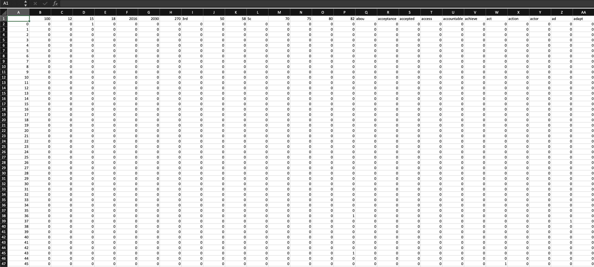
Download twitter_cv.csv
K-Means: Elbow Plot
The next step in the clustering process is implementing K-means clustering. K-means clustering is a method of grouping with an aim to partition n observations into k clusters with the nearest mean. To determine the ‘k’ value, we deploy an elbow graph. The elbow graph showcases the k values along with a heuristic used to determine the number of clusters in the data. It is often said that the steeper the ‘k’ value is, the more apt it is to use in the K-Means clustering.
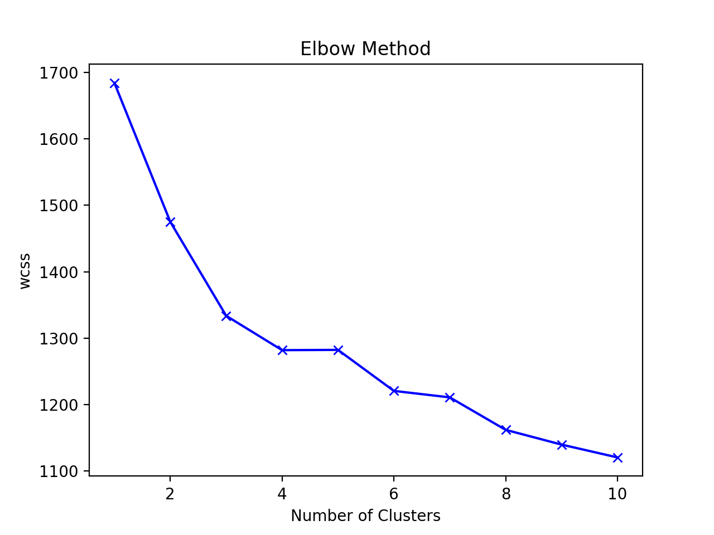
The Elbow plot for K-Means clustering
By looking at the graph, we can notice that k = 4, 6, 8 are good K's to choose for our K-Means clustering.
2D clustering: PCA
Now that we have our optimal ‘K’ values, the next thing to do is to plot the countvectorized data. However, since the dimension of the data are so big, we can use PCA or Principle Component Analysis to reduce the dimensionality and showcase the graph as a 2D vector. This is done by the python module ‘TruncatedSVD’. It acts as a PCA, however is more useful on larger and sparse datasets which cannot be optimally centered without increase the amount of memory. Another notable difference between TruncatedSVD and PCA is how the explained_variance is calculated.
Once we have our 2D vector created via PCA on the countvectorized data, we can not plot it.
K-Means Clustering
By determining that the optimal K to cluster the graphs are K = 4, 6, and 8, find below the graphs of each of the clusters.

PCA: K-Means Clustering | K = 4
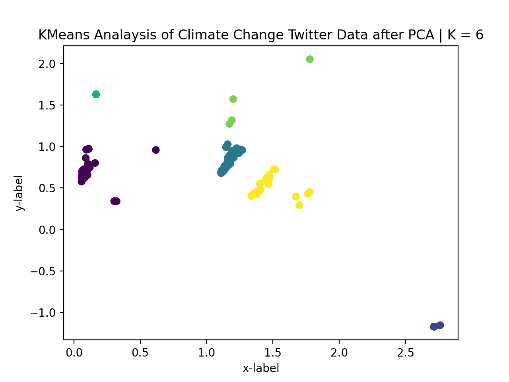
PCA: K-Means Clustering | K = 6
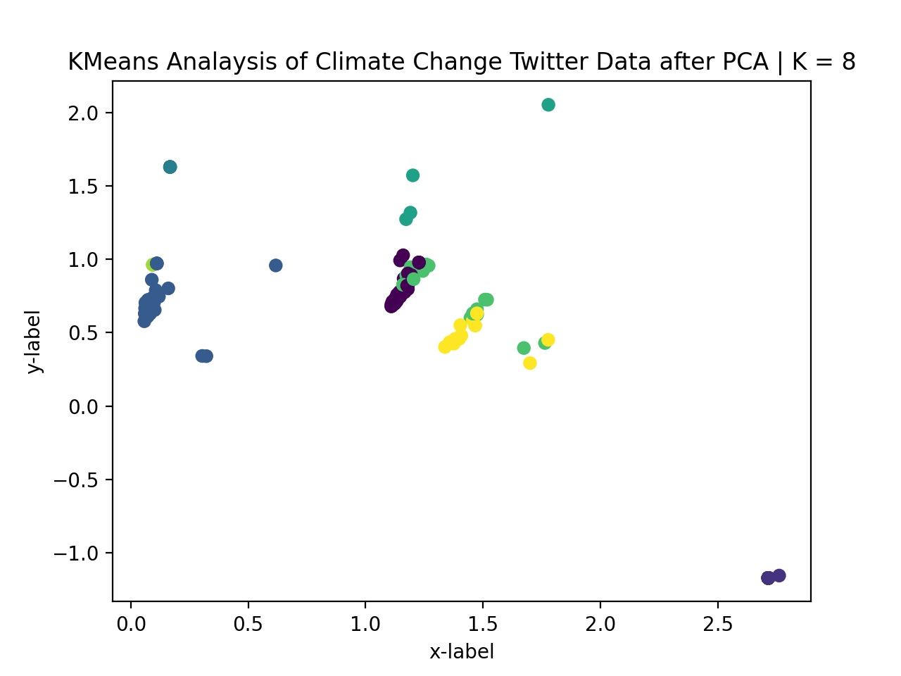
PCA: K-Means Clustering | K = 8
DBSCAN
In this portion, we can perform a density-based spatial clustering of applications with noise (DBSCAN). This method finds core samples of high density and expands clusters based around them. It’s highly effectual for data which contains similar clusters of density. The image can be seen below.
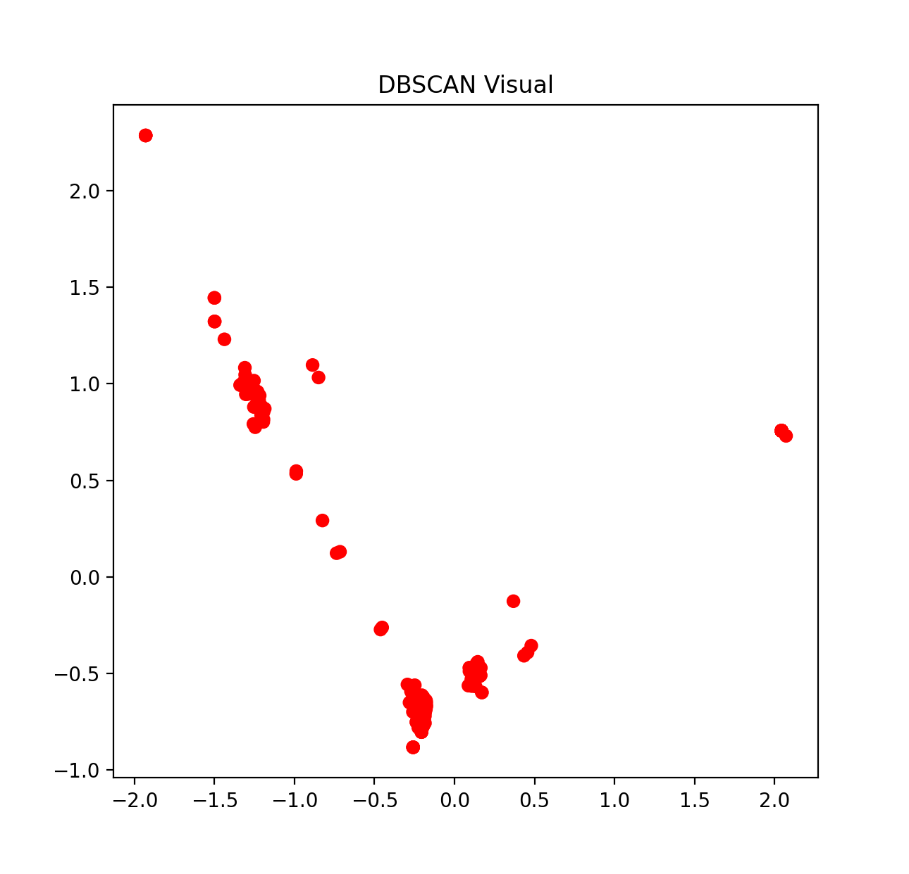
DBSCAN plot
As we can see, the clustering via DBSCAN isn't that optimal.
Hierarchical Clustering
In the next step, we can identify the Hierarchical clusters. This is a process where groups of similar objects are bound together as clusters. Each cluster is a distinct to each other and the objects within the same cluster are similar to each other. Ultimately, we’re seeing the same results are the Dendrogram. The image can be viewed below.
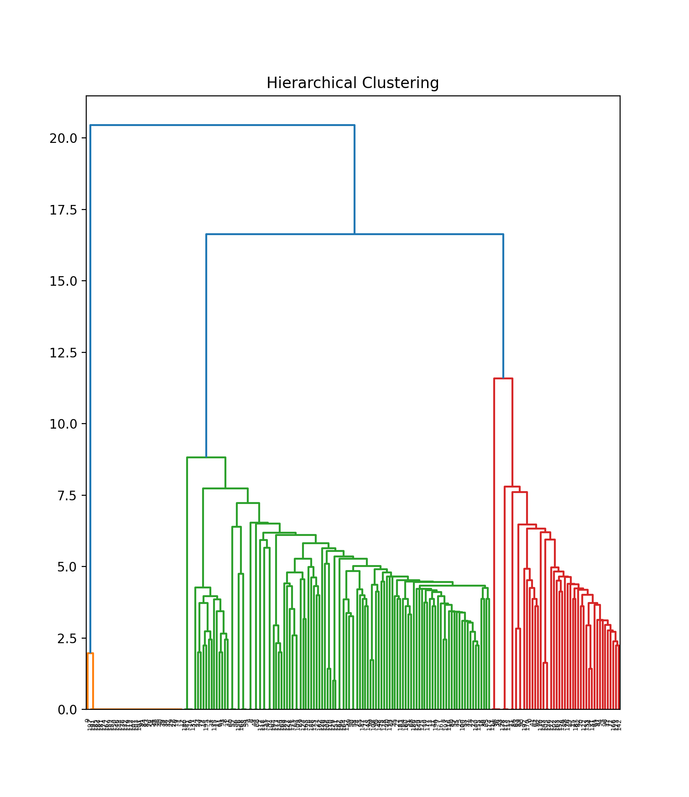
Hierarchical Cluster
In this, we can see that the different document rows are being clustered via similarity in a Dendrogram. Although we can't see the x-axis labels that well due to the sheer number of data points, on the Python terminal it can be seen clearer.
PYTHON - SUMMARY
What this section was for is to understand how text based data can be clustered and showcased in various graphs.
We first started by getting the Tweets, cleaning them via regular expressions, and creating a count vectorized dataframe of all the unique words as columns and the rows being document id. We created a wordcloud to see the unique words in each label.
We then removed the label. Next, we ran the elbow plot to determine the optimal 'K' for K-Means and performed a PCA to reduce the number of dimensionality of the dataframe to plot 2D Vectors. We noticed that K = 4,6, and 8 were the best K values and plotted the scattered plots respectively.
Then, using, density-based spatial clustering of applications with noise (DBSCAN), we found core samples of high density and expands clusters based around them. It is very effective for data which contains similar clusters of density. We saw that the clusters weren't getting clustered properly with this method.
Finally, upon seeing the results of the various K-Means and DBSCAN, we created a Dendrogram to see an ariel correlation amongst the various data nodes in the countvectorized dataframe.